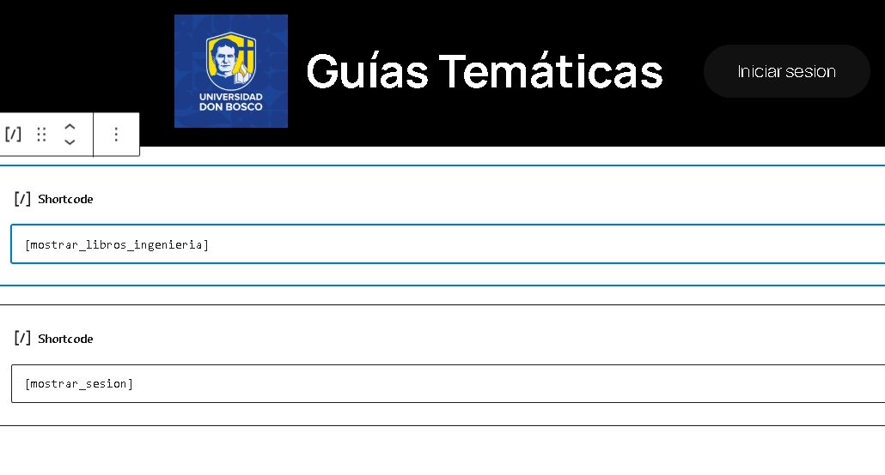
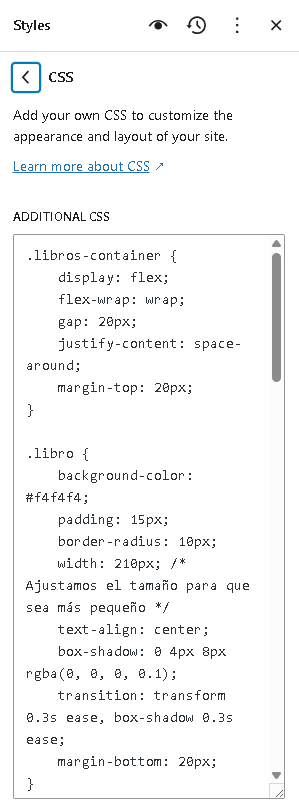

Libros digitales
Recursos electronicos
Implementación de Gestión de Sesiones
Se desarrolló una funcionalidad para mostrar el usuario activo y permitir el cierre de sesión de manera dinámica. Se utilizó jQuery para actualizar la interfaz según el estado de la sesión.

Asi se muestra en código de la función en wordpress
function mostrar_sesion_usuario() {
if (!is_user_logged_in()) {
return '<p>No has iniciado sesión.</p>';
}
$current_user = wp_get_current_user();
$username = $current_user->user_login;
ob_start(); ?>
<div id="session-container">
<p id="session2">Usuario: <?php echo esc_html($username); ?></p>
<button id="cerrar">Cerrar sesión</button>
</div>
<script>
jQuery(document).ready(function($) {
$("#cerrar").click(function() {
$.ajax({
url: "<?php echo wp_logout_url(home_url()); ?>",
method: "POST",
success: function() {
alert("Sesión cerrada");
location.reload();
},
error: function() {
alert("Error al cerrar la sesión");
}
});
});
});
</script>
<?php
return ob_get_clean();
}
add_shortcode('mostrar_sesion', mostrar_sesion_usuario);
Consumo de API para libros
Se desarrolló un shortcode en WordPress que permite mostrar libros de ingeniería obtenidos desde la API de Open Library. Se implementó paginación dinámica para mostrar 4 libros por página.
⚠️Desplazar scrooll hacia derecha para ver codigo
function obtener_libros_ingenieria($page = 1) {
// URL de la API de Open Library para buscar libros relacionados con Ingeniería
$url = 'https://openlibrary.org/search.json?q=ingeniería&limit=4&page=' . $page;
// Obtención de los datos de la API
$response = wp_remote_get($url);
if (is_wp_error($response)) {
return 'No se pudo obtener información de la API.';
}
// Convertir la respuesta JSON en un array
$data = json_decode(wp_remote_retrieve_body($response), true);
if (isset($data['docs']) && !empty($data['docs'])) {
// Crear el HTML para mostrar los libros
$output = '<div class="libros-container">';
foreach ($data['docs'] as $book) {
$title = isset($book['title']) ? $book['title'] : 'Título no disponible';
$author = isset($book['author_name']) ? implode(', ', $book['author_name']) : 'Autor no disponible';
$first_publish_year = isset($book['first_publish_year']) ? $book['first_publish_year'] : 'Año no disponible';
$cover_id = isset($book['cover_i']) ? $book['cover_i'] : '';
// Generar el HTML para cada libro
$output .= '<div class="libro">';
if ($cover_id) {
$output .= '<img src="https://covers.openlibrary.org/b/id/' . $cover_id . '-L.jpg" alt="' . esc_attr($title) . '" class="libro-cover">';
}
$output .= '<h3 class="libro-titulo">' . esc_html($title) . '</h3>';
$output .= '<p class="libro-autor">Autor(es): ' . esc_html($author) . '</p>';
$output .= '<p class="libro-publicacion">Publicado en: ' . esc_html($first_publish_year) . '</p>';
$output .= '</div>';
}
$output .= '</div>';
// Paginación
$output .= '<div class="paginacion">';
$output .= '<a href="?page=' . ($page - 1) . '" class="paginacion-prev" ' . ($page <= 1 ? 'style="pointer-events: none;"' : '') . '>Anterior</a>';
$output .= '<a href="?page=' . ($page + 1) . '" class="paginacion-next">Siguiente</a>';
$output .= '</div>';
return $output;
} else {
return 'No se encontraron libros de ingeniería.';
}
}
// Registrar el shortcode
function libros_ingenieria_shortcode($atts) {
$page = isset($_GET['page']) ? (int) $_GET['page'] : 1;
return obtener_libros_ingenieria($page);
}
add_shortcode('mostrar_libros_ingenieria', 'libros_ingenieria_shortcode');
Se agrego css adicional para los libros
